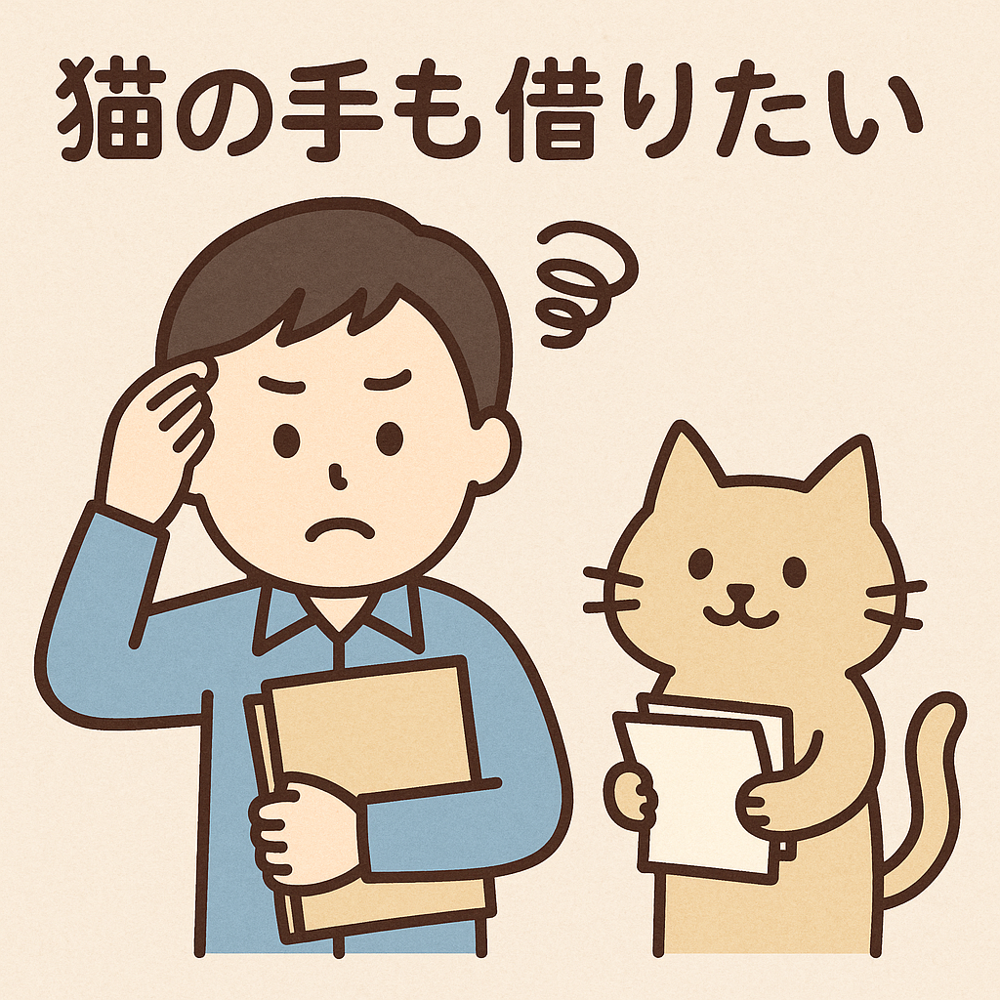
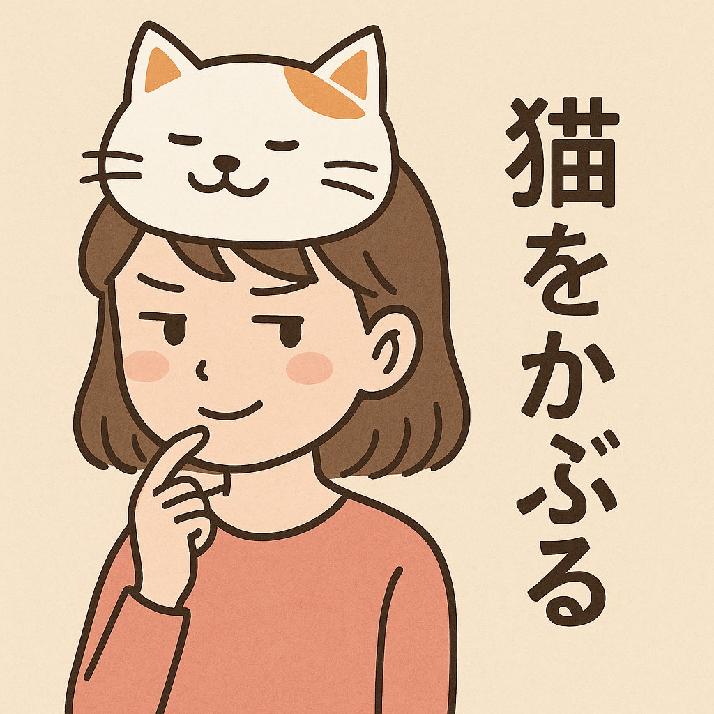
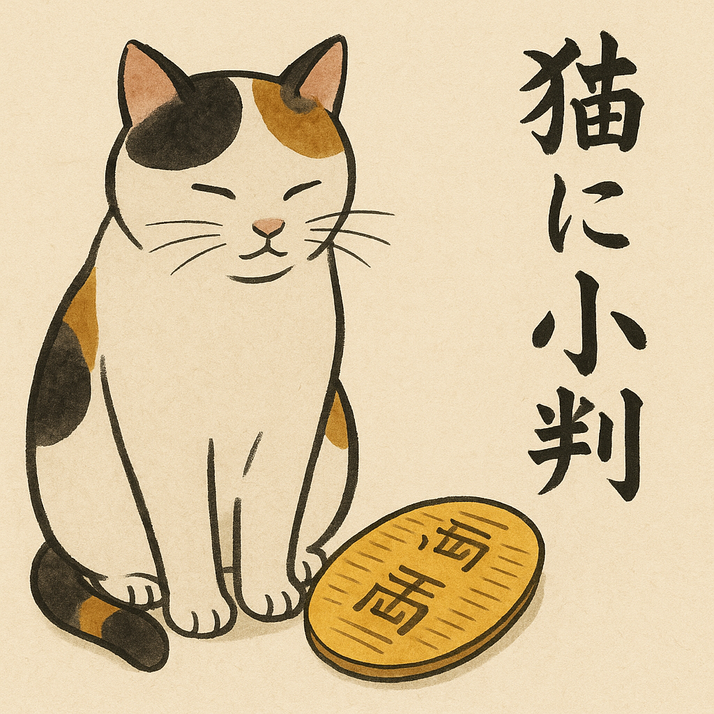

🐾 猫のことわざ一覧
- 猫に小利： 価値のわからない人に貴重なものを与えても無駄。
- 猫の手も借りたい： とても忙しくて誰でもいいから助けが欲しい。
- 猫をかぶる： 本性を隠しておとなしく見せる。
- 借りてきた猫のよう： よそでおとなしくしている様子。
- 猫の額： とても狭い場所。
- 猫舌： 熱い食べ物が苦手な人。
- 猫なで声： あまえたようなわざとらしい声。
🔹 ことわざ「猫の手も借りたい」

意味
非常に忙しくて、人手が完全に足りない状態。役に立たない猫の手でも助けてほしいと思うほどの切羅さを表します。
使い方の例
- 年末の仕事で大忙しのとき
- 文化祭の準備でやることが多すぎるとき
- 大掃除や引越しで家中がごった返しなとき
A： 最近どう？
B： もう忙しすぎて、猫の手も借りたいくらいだよ！
🔹 ことわざ「猫をかぶる」

意味
本当の性格や能力を隠して、おとなしく見せることを意味します。
使い方の例
- 新入生がほとんど口を別にしている
- おとなしそうな人が実は会社ですごくしゃべり
A： あの人、おとなしいよね～
B： 猫をかぶってるだけだよ！実はめっちゃ話すし！
🔹 ことわざ「猫に小判」

意味
価値のわからない人に貴重なものを与えても無駄だということ。
使い方の例
- 高価な宝石を子どもにあげてもわからない時
- 専門知識のない人に専門的な話をしても理解できない時
- 価値の分からない人に役立つアドバイスをしても無意味な時
A： この時計、高かったんだよ。
B： でも、彼には「猫に小判」かもしれないね。
🔹 新しく作ったことわざ「猫のひげも照らす」
意味
ほんの小さなことでも、注意深く見れば役に立つことがある。
使い方の例
- 小さなヒントでも見逃さずに活用するとき
- 注意深く準備して失敗を防ぐとき
- どんなに小さな助けでもありがたいとき
A： 細かいことまで気にしなくていいよ。
B： いや、「猫のひげも照らす」って言うから、小さなことも見逃さないようにしよう！